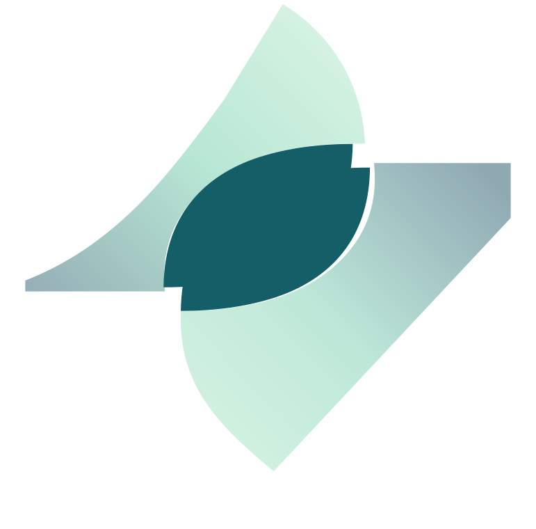
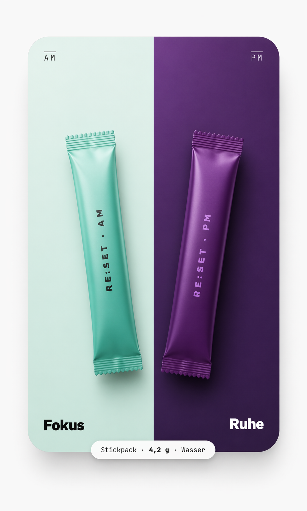

07:14
Der Morgen ist
ein Blindflug.
Schnell-Kaffee, Doomscroll, Wechsel zwischen fünf Kontexten. Du funktionierst – aber du beginnst nicht.

RE:SETRE:SET ist dein AM/PM-System. Ein Stick am Morgen für Fokus und Klarheit. Ein Stick am Abend zum Runterfahren. Kein Supplement-Stack, keine Caffeine-Rollercoaster, nur eine Routine, die endlich funktioniert.

Der Unterschied zwischen High-Performern und dem Rest ist selten Talent. Es ist ein Rhythmus, der hochfährt – und einer, der wieder runterfährt.
Schnell-Kaffee, Doomscroll, Wechsel zwischen fünf Kontexten. Du funktionierst – aber du beginnst nicht.
Noch eine Mail, noch ein Gedanke, noch ein Reel. Das Nervensystem bleibt oben. Der Schlaf bleibt flach.
Sechs Gläser, vier Marken, drei Timings. Irgendwann hörst du auf. Disziplin war nie das Problem – dein System war es.
Ein Stick. Ein Glas Wasser. Klare Energie ohne Crash, fokussiertes Denken ohne Zittern. Der saubere Start in einen Tag, den du tatsächlich führst.
Ein Ritual, das dein Nervensystem leise schaltet. Für echten Schlaf, echte Regeneration und einen Morgen, der sich nicht anfühlt wie ein Neustart unter Stress.
So geht's
AM mit Wasser einrühren und bewusst in den Tag starten.
PM als klares Signal zum Herunterfahren in die Routine legen.
Die Stärke entsteht durch Wiederholung, nicht durch Übertreibung.
Benefits
AM und PM folgen einer klaren Funktion statt generischer All-in-One-Komplexität.
Ein minimalistisches Format, das sich einfach und hochwertig anfühlt.
Produkte als ruhige Objekte, nicht als laute Verkaufsrequisiten.
Editoriales Design mit viel Weißraum für eine klare, vertrauensvolle Wahrnehmung.
04 · ANDERS
Energy Drinks geben dir Spike. Kapseln geben dir Admin. Supplement-Protokolle geben dir Tabellen. RE:SET gibt dir eine Routine.
| Was du brauchst |
RE:SET | Energy Drink | Kapsel-Stack | Supplement- Abo |
|---|---|---|---|---|
| Klarer AM/PM- Rhythmus |
||||
| In Sekunden zubereitet |
||||
| Ohne Zucker- Crash |
||||
| Fokus & Runterfahren in einem System |
||||
| Kein Stack- Management |
||||
| Auf Performer zugeschnitten |
Founder Story
Aus dem Wunsch nach mehr Struktur, Ruhe und Qualität entstand ein Format, das nicht nach mehr aussieht, sondern nach weniger Stress.

Waitlist
FAQ
AM am Morgen als Start in den Tag, PM am Abend als bewussten Übergang in die Ruhephase.
Ein Stickpack mit Wasser mischen. Klar, schnell und ohne zusätzliche Steps.
Weil Fokus und Ruhe unterschiedliche Anforderungen haben und gezielt gedacht werden sollten.